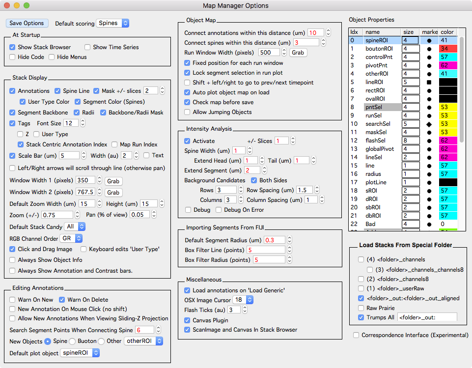
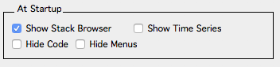
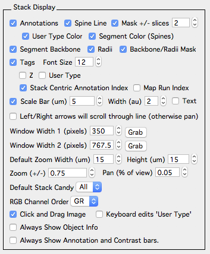
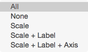
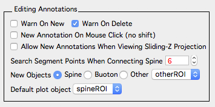
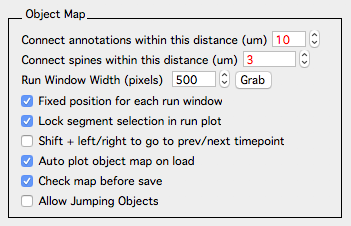
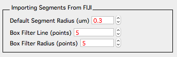
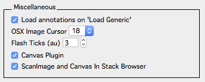
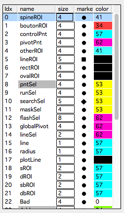
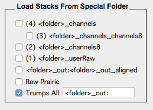

Options
The Map Manager Options panel provides global options to control the behavior of Map Manager. Global options can be saved using the Save Options button or the menu ‘MapManager - Save Options…’. Values shown in red will effect analysis and those in black will only effect program behavior.
The options panel is opened from the main menu ‘MapManager - Options’.

At Startup

Options to control the behavior of Map Manager when it first starts.
- Show Stack Browser. Show the stack browser panel at startup.
- Show Time Series. Show the time-series panel at startup.
- Hide Code. Hide code windows at startup.
- Hide Menus. Hide extraneous Igor menus at startup.
Stack Display

Options that control the display of annotations, tracings, and annotation tags in stack windows. Changes will be applied the next time a stack window is opened. Already opened stack windows can be updated on-the-fly by pressing keyboard ‘r’ (in the stack window).
-
Annotations. Show/hide annotations.
-
Spine Line. Only for spine annotations. Toggle the line connecting the spine head to the parent segment radius.
-
Mask +/- slices. Turn annotation masking on/off. If off, annotations will be shown in all image planes. If on, annotations will only be shown in +/- slices (image planes) of the image plane corresponding to each annotations Z position. This is also used to mask segment backbone and radii.
-
User Type Color. Display annotations using their user type color. User type colors 0..9 are specified in the ‘Object Properties - User Type 0..9’ (see below).
-
Segment Color (Spines). Only for spine annotations. Display all spine annotations using the segment color specified in the stack window - annotation bar - segments.
-
Segment Backbone and Radii. Only for spine annotations. Toggle the segment backbone and radius line tracing.
-
Backbone/Radii Mask. Only for spine annotations. Toggle the masking of the segment backbone and radius to only display around the image plane it is in. If off, segment backbone and radius lines will be shown in all image planes. If on, masking is done by using value specified in the annotations ‘Mask +/- slices’.
-
Tags. Toggle annotation tags on/off.
-
Font Size. The font size of annotation tags.
-
Z. Display annotation tags with an annotations Z image plane.
-
User Type. Display annotation tags with an annotations user type.
-
Stack Centric Annotation Index. Display annotation tags with the stack centric annotation index. Annotations are given an index within a stack in the order they are created. Deleting an annotation will result in all later annotations to have their annotation index decremented.
-
Map Run Index. Display annotation tags with their map centric ‘run’ index.
-
Scale Bar (um), Width (au) and Text. Displayed in the bottom right of all stack windows. Specify the length (um), the width (au) and wether to include the units (in um). Displaying the scale bar in an individual stack window can be controlled by cycling through stack window candy options with keyboard shift+c.
-
Left/Right arrows will scroll through line (otherwise pan).
-
Window With 1/2 (pixels). Default stack window size. Each stack window has two sizes that can be cycled using keyboard ‘]’.
-
Default Zoom Width/Height (um). The amount to zoom in on annotations in stack and run plots. This is used when an annotation is right-clicked and ‘plot point/spine’ or ‘plot run’ is selected.
-
Zoom (+/-). The fractional amount of the image to zoom at each step. Larger numbers will zoom more, smaller numbers will zoom less. Used when zooming an image with keyboard +/- or with ctrl + mouse-wheel.
-
Pan (% of view). The percent of the view to step when panning with keyboard arrow-kets. Larger numbers will pan more, smaller will pan less.

- Default Stack Candy. Default window candy for each stack. These can be cycled in a stack window using keyboard shift+c.
- All.
- None.
- Scale.
- Scale + Label.
- Scale + Label + Axis.
-
RGB Channel Order. For multi-color images using RGB button in buttons.
-
Click and Drag Image. If one, mouse click+drag will pan the stack image. If off, mouse click+drag will make an Igor selection.
-
Keyboard edits ‘User Type’. If on, keyboard 0..9 will set the user type of a selected annotation. If off (default), keyboard 1-5 will set the color channel to display.
-
Always Show Object Info. When checked, the object info panel will always be shown when opening a stack window. Within a stack window, the object info panel can always be toggled with keyboard ‘i’.
- Always Show Annotation and Contrast Bars. The annotation bar is toggled with keyboard ‘[’ and the contrast bar with keyboard ‘c’.
Editing Annotations

Options that control the editing of annotations.
-
Warn On New. Show a warning dialog when creating new annotations.
-
Warn On Delete. Show a warning dialog when deleting annotations.
-
New Annotation On Mouse Click (no shift). If off (default), new annotations are created with shift + left-mouse click. If on then new annotations are created with a single left-mouse click.
-
Allow New Annotations When Viewing Sliding Z-Projection. If off (default), new annotations are not allowed when viewing a sliding z-projection. If on, new annotations are allowed while viwing a sliding z-projection. Sliding z-projections can be activated using the buttons panel.
-
Search Segment Points When Connecting Spines. The number of candidate points to search for brightest path from a spine head to the segment backbone.See algorithms.
-
New Objects. The default object to make on shift+click.
-
Default plot object. The object to plot in map (time-series) plots.
Object Map

-
Connect annotations within this distance (um). When auto connecting annotations in a time-series (map) and generating a Guess in Find points.
-
Connect spines within this distance (um). When auto connecting spines in a time-series (map) and generating a Guess in Find points. This is the distance from the segment pivot points along a dendritic segment (um). You can see this distance (pDist) in the Point Info panel of a stack.
-
Run Window Width (pixels). The width of each window in a run plot.
-
Fixed posiiton for each run window. When checked, each timepoint in a run plot will be in a fixed screen position determined by its timepoint. When off, the first time-point in a run will always start in the upper left of the screen.
-
Lock segment selection in run plot. For spine annotations only. When plotting a run from a spine, lock (isolate) the stack window interface so edits can only be made to the given parent segment. This can be turned off in a stack window by a right-click on the segment and selecting ‘unisolate segment’.
-
Shift + left/right to go to prev/next timepoint. When off (default), shift + left/right arrow keys go to the previous/next annotation. For spine annotations, this is the previous/next spine along a given segment. When on (experimental) shift + left/right arrow keys will go to the previous/next timepoint while maintaining the same stack window.
-
Auto plot object map on load. Automatically plot a map plot when a time-series (map) is loaded.
-
Check map before save. Check the time-series (map) for errors before saving.
-
Allow Jumping Objects. Advanced. Do not use.
Intensity Analysis

Only for spine annotations. Controls the parameters of spine intensity analysis. See intensity analysis for a complete decription.
-
Activate. When on, spine selections in a stack window will show spine and segment ROIs. Note, background ROIs are not show until a spine is analyzed.
-
+/- Slices. The number of image slices to analyze. For the spine ROI, this is the Z position of the spine head (annotation). For the segment ROI, this is the Z position of the spine connection point (to the segment tracing), for the combined (spine/segment) background ROI, this is the Z position of the spine head.
-
Spine Width (um). The default width of the spine ROI.
-
Extend Head and Tail (um). Distance to extend a spine ROI beyond the spine head and tail. For the spine head, this extends beyond the position of the spine (head) annotation, for the tail it extends beyond the connection point of the segment tracing radius.
-
Extend Segment (um). Distance along the segment to extend the segment ROI. Note, this can cause problems as it does not take into account the spine length. Longer spines with the same segment extension will have lower values for any ratio taken beween the spine ROI and the segment ROI.
- Background Candidates
- Both Sides. Consider background ROI candidates on both side of the parent segment.
- Rows and Row Spacing (um). Number of rows to consider and their spacing.
- Columns and Column Spacing (um). Number of columns to consider and their spacing.
-
Debug. Advanced use only.
- Debug On Error. Advanced use only.
Importing Segments From FIJI

-
Default Segment Radius (um). The default segment radius of all imported segment tracings. We have found it is more reliable to specify this as a parameter rather than trying to fit the radius based on image intensity.
-
Box Filter Line and Radius (points). On import, the backbone line fit is box filtered. This reduces jitter in z-image planes for segments running parallel to the image plane.
Miscellaneous

-
Load annotations on ‘Load Generic’. Try and load annotations from the ‘stackdb’ folder.
-
OSX Image Cursor. In rare cases, we were visually loosing the cursor on MacOS. This will specify a MacOS image cursor as it is moved over an image.
-
Flash Ticks. A number that controls the speed that a point is flashed when selected. Smaller numbers are faster. Point flashing is used to make it easier to see where there is a point selection. See ‘Object Properties - flashSel’ to control the size, marker, and color of the point that is flashed.
-
Canvas Plugin. Load the canvas plugin at startup. The canvas plugin is software to organize imaging sessions and is described in canvas.
-
ScanImage and Canvas In Stack Browser. Show ScanImage and Canvas interface in stack browser.
Object Properties

Use this table to set how annotations and lines are displayed. Right-click on ‘marker’ or ‘color’ to set. Double-click on ‘size’ to set. Note, ‘size’ is in arbitrary Igor centric units, generally between 1 and 10.
| Idx | Name | Meaning |
|---|---|---|
| Annotation Display | Set the size, color and marker of annotations | |
| 0 | spineROI | Spine marker in stack and map plot |
| 1 | boutonROI | |
| 2 | controlPnt | |
| 3 | pivotPnt | |
| 4 | otherROI | |
| 5 | lineROI | |
| 6 | rectROI | |
| 7 | ovalROI | |
| Annotation Selection | ||
| 8 | pntSel | When an annotation is selected |
| 9 | runSel | When a run of annotations is selected |
| 10 | searchSel | To overlay markers showing annotations in the last search. Turn this on in the buttons window. |
| 11 | maskSel | When a mask is selected |
| 12 | flashSel | On selection, annotations are flashed. See ‘Options - Miscellaneous - Flash Ticks (au)’ to control the speed. |
| Other | ||
| 13 | globalPivot | |
| 14 | lineSel | Not sure any more, go figure out the brain |
| 15 | line | Segment tracing backbone line |
| 16 | radius | Segment tracing radius line |
| 17 | plotLine | Line connecting corresponding annotations in map plots |
| Spine Intensity | ||
| 18 | sROI | Spine intensity ROI |
| 19 | dROI | Segment intensity ROI |
| 20 | sbROI | Spine background ROI |
| 21 | dbROI | Segment background ROI |
| Annotation dynamics | ||
| 22 | Bad | Bad annotations |
| 23 | Add | Added annotations |
| 24 | Subtract | Subtracted annotations |
| 25 | Persistent | Persistent annotations |
| 26 | Transient | Transient annotations |
| User 1/2/3 | ||
| 27 | User 1_1 | Not used |
| 28 | User 1_2 | Not used |
| 29 | User 1_3 | Not used |
| 30 | User 1_4 | Not used |
| 31 | User 1_5 | Not used |
| User Type | ||
| 32 | User Type 0 | User type 0 |
| 33 | User Type 1 | User type 1 |
| 34 | User Type 2 | User type 2 |
| 35 | User Type 3 | User type 3 |
| 36 | User Type 4 | User type 4 |
| 37 | User Type 5 | User type 5 |
| 38 | User Type 6 | User type 6 |
| 39 | User Type 7 | User type 7 |
| 40 | User Type 8 | User type 8 |
| 41 | User Type 9 | User type 9 |
Load Stacks From Special Folder

This is extremely experimental and only used by developers. If running into problems, turn off all these checkboxes. Each of the check boxes will redirect the loading of image stacks to different folders. In particular, the channels8 option will load 8-bit versions which is useful to speed annotations of larger 16-bit images. See Fiji plugin bConvertTo8Bit_v5_.py to convert entire directories of tiff stacks to 8-bit.
- folder_channels
- folder_channels_channels8
- folder_channels8
- folder_userRaw
- folder_out:folder_out_aligned
- Raw Prairie
- **Trmps all ‘
_out:'